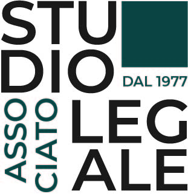

Gian Luca Vitale
développeur junior
spécialiste en droit du travail et paie
À propos de moi
Fiable, tenace, attentif.
Mon parcours couvre des domaines variés : droit, comptabilité et responsabilités dans la représentation du personnel.
Je suis compétent en audit de paie et en analyse juridique, avec une forte capacité à produire des résultats grâce à la collaboration stratégique et à l’innovation.
À l’aise avec le code et le pilotage des tâches en mode Agile, j’apprécie le travail en équipe dans un climat bienveillant.
Je m’intéresse particulièrement à la comparaison internationale des pratiques juridiques, comptables et numériques.
Je tiens à exprimer mon admiration pour l'engagement bénévole de ces avocats italiens (Avvocato di Strada OdV),
qui offrent une assistance juridique gratuite aux personnes sans domicile fixe (SDF). Leur action, discrète et humaine, poursuit une idée de justice accessible et solidaire et représente un example remarquable de responsabilité civique.


Témoignages
Maître C. Maroni.
Avocate spécialisée en droit du travail

Il mio amico intelligente è stato un praticante davvero diligente. Se imparare sempre cose nuove, a qualsiasi età, fosse un lavoro, lui avrebbe un reddito garantito.
Savoir-faire
FRONTEND
Maîtrise des technologies côté client, avec la capacité de concevoir des interfaces interactives, claires et efficaces.
BACKEND
Compétences solides en développement côté serveur : structuration de l’application, gestion des données et logique métier.
EXÉGÈSE JURIDIQUE
Bonne capacité d’analyse des textes juridiques, avec un sens critique aiguisé et une attention au détail.
TRAITEMENT DE LA PAIE
Expérience confirmée dans la gestion des paies, les audits et la conformité aux obligations légales.
UX-UI Design
Conception d'interface centrées sur l'utilisateur, alliant érgonomie, accessibilité et esthètique. Un logiciel conçu pour la mise en page papier d'une facture ainsi que d'une fiche de paie n’est-il pas meilleur qu'une interface alambiquée (menus déroulants, leviers, boutons, etc.) ? Une veritable conciliation des opposés : la meilleure approche dépend des besoins spécifiques des utilisateurs et du contexte d'utilisation. Simplicité, efficacité et conformité sont primordiales, mais il est également essentiel de les combiner avec un certain niveau de flexibilité et d'intégration, sans épargne de fonctionnalités avancées.
Conseiller Tech RH
Grâce à une double compétence en droit du travail italien et en gestion de la paie, je peux accompagner les entreprises concernées dans la mise en œuvre de solutions numériques adaptées aux problématiques RH. Je m'intéresse à l'analyse comparée et à l'implémentation numérique de diverses législations ainsi que de différents systèmes fiscaux et de prévoyance sociale.
Portfolio
Voici quelques projets récents qui illustrent mes compétences ...
Fragment de tableau de bord d'entreprise (étude) - Visualisation de données industrielles issues de plusieurs lignes de production,
visant à mettre en évidence la composition des déchets industriels (diagramme circulaire à gauche)
et l’évolution temporelle (graphique linéaire à droite) des volumes de production vs. pièces rejetées pour chaque produit
(sélectionnable via un menu déroulant).
Frontend : Angular 17 / Backend : Java 21 (JPA, Hibernate, MySQL)
Une étude frontend (HTML, CSS, JS) pour la connexion utilisateur.
Ebook publié en ligne au format .epub | .pdf sous licence
Télécharger l’ebook
Contactez-moi
N'hésitez pas à me contacter. Envoyez-moi un message :